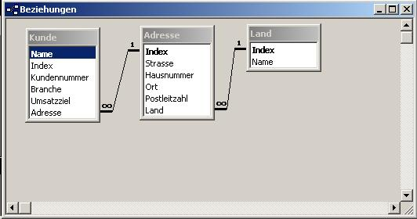

|
Bentutzen Sie diese Datenbank und erstellen sie eine Benutzer- oder System-DSN im ODBC Manager in der Systemsteuerung mit dem Namen "splitter". Wie das geht steht hier.  Erstellen Sie eine Visual Anwendung, welche in einem geteilten Fenster (Splitter Window) diese Datenbank in 4 Ansichten zeigt: Inhalte der Ansichten:
|
// MainFrm.cpp : Implementierung der Klasse CMainFrame // #include "stdafx.h" #include "splitter.h" #include "MainFrm.h" //Die Dokumentklasse #include "SplitterDoc.h" //Die 4 View Klassen #include "DKunde.h" #include "DLand.h" #include "DJoin.h" #include "DAdresse.h"
BOOL CMainFrame::OnCreateClient(LPCREATESTRUCT lpcs, CCreateContext* pContext)
{
// TODO: Speziellen Code hier einfügen und/oder Basisklasse aufrufen
// Folgende Zeile muss auskommentiert werden
// -> return CFrameWnd::OnCreateClient(lpcs, pContext);
// Geteiltes Fenster mit 2 Zeilen und 2 Spalten erstellen
m_wndSplitter.CreateStatic(this,2,2);
// Alle 4 Views an den in den ersten zwei Parametern übergebenen Positionen einfügen
m_wndSplitter.CreateView(0,0,RUNTIME_CLASS(DKunde),CSize(350,250),pContext);
m_wndSplitter.CreateView(1,0,RUNTIME_CLASS(DAdresse),CSize(350,250),pContext);
m_wndSplitter.CreateView(0,1,RUNTIME_CLASS(DLand),CSize(350,220),pContext);
m_wndSplitter.CreateView(1,1,RUNTIME_CLASS(DJoin),CSize(350,220),pContext);
return TRUE;
}
void DAdresse::OnVor()
{
// Datensatzzeiger vorrücken
m_pSet->MoveNext();
// Daten in die Controls (auf den Bildschirm) schreiben
UpdateData(false);
}
void DAdresse::OnZurueck()
{
// Datensatzzeiger zurückrücken
m_pSet->MovePrev();
// Daten in die Controls (auf den Bildschirm) schreiben
UpdateData(false);
}
void DAdresse::OnAdd()
{
// Datenbank für Hinzufügen vorbereiten
m_pSet->AddNew();
// Spalte Index der Tabelle ist Autowert
// desshalb den von AddNew() generierten merken..
int merker = m_pSet->m_Index;
// Daten von den Controls in die Variablen kopieren
UpdateData();
// .. und Autowert von Index restaurieren
m_pSet->m_Index = merker;
// Einfügeoperation abschließen
m_pSet->Update();
// Aktualisieren der Datenbank
m_pSet->Requery();
// Daten in Controls kopieren
UpdateData(false);
}
void DAdresse::OnDel()
{
// Aktellen Datensatz löschen
m_pSet->Delete();
// Gelöschten wirklich entfernen
// er wird sonst noch als gelöscht angezeigt
m_pSet->Requery();
// Controls aktualisieren
UpdateData(false);
}
void DAdresse::OnUpdate()
{
// Aktuellen Datensatz zum Editieren vorbereiten
m_pSet->Edit();
// Benutzereingaben in die Variablen kopieren
UpdateData();
// Editieroperation abschließen
m_pSet->Update();
}
void DJoin::OnInitialUpdate()
{
BeginWaitCursor();
GetRecordset();
CRecordView::OnInitialUpdate();
if (m_pSet->IsOpen())
{
CString strTitle = m_pSet->m_pDatabase->GetDatabaseName();
CString strTable = m_pSet->GetTableName();
if (!strTable.IsEmpty())
strTitle += _T(":") + strTable;
GetDocument()->SetTitle(strTitle);
}
EndWaitCursor();
// Tabellenüberschriften setzen
m_list.InsertColumn(0,"Kunde",LVCFMT_LEFT,60);
m_list.InsertColumn(1,"Ort",LVCFMT_LEFT,60);
m_list.InsertColumn(2,"Strasse",LVCFMT_LEFT,80);
m_list.InsertColumn(3,"Hausnr",LVCFMT_LEFT,40);
m_list.InsertColumn(4,"Land",LVCFMT_LEFT,80);
}
void DJoin::OnSuch()
{
// Natural Join (jedes mit jedem) verhindern
m_pSet->m_strFilter = "Kunde.Adresse = Adresse.Index AND Adresse.Land = Land.Index";
// Schauen, ob etwas im Eingabefeld steht
UpdateData();
if (m_kunde != "")
//Wenn ja, danach suchen
m_pSet->m_strFilter += " AND Kunde.Name = '"+m_kunde+"'";
// Recordset aktualisieren ( Suchregel wird angewendet )
m_pSet->Requery();
// Alte Items der CListCtrl löschen
m_list.DeleteAllItems();
// Solange Elemente vorhanden
while (!m_pSet->IsEOF())
{
// in CListCtrl einfügen
int item = m_list.InsertItem(0,m_pSet->m_kunde,-1);
m_list.SetItemText(item,1,m_pSet->m_ort);
m_list.SetItemText(item,2,m_pSet->m_strasse);
m_list.SetItemText(item,3,m_pSet->m_hausnummer);
m_list.SetItemText(item,4,m_pSet->m_land);
// Aktellen Datensatz um eins weitersetzen
m_pSet->MoveNext();
}
}